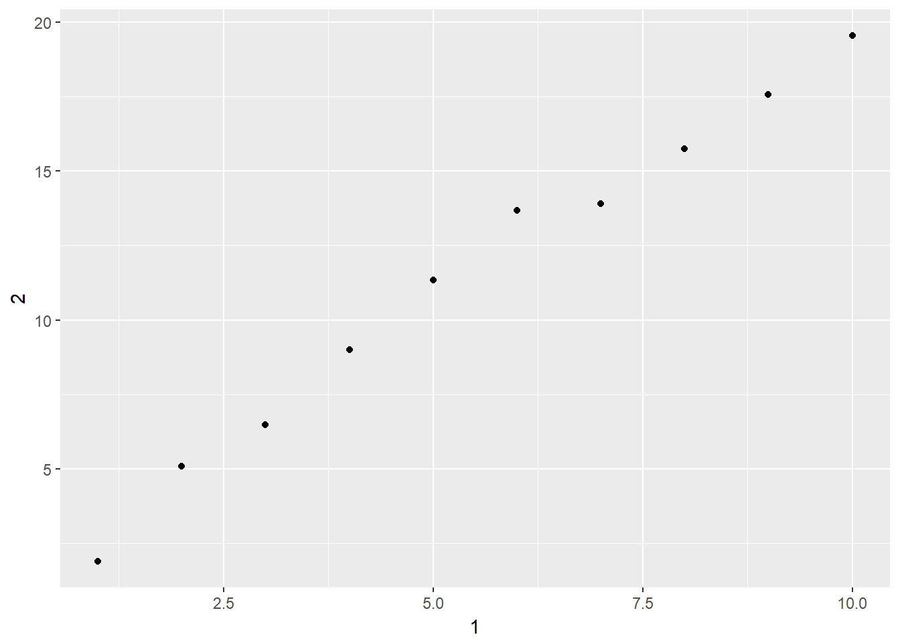

10 Tibbles
10.1 Introduction
No exercises.
10.2 Creating tibbles
No exercises.
10.3 Tibbles vs. data.frame
No exercises.
10.4 Interacting with older code
No exercises.
10.5 Exercises
1 - How can you tell if an object is a tibble? (Hint: try printing mtcars, which is a regular data frame).
There are many ways to tell if an object is a tibble. We can look at the class type:
class(mtcars)## [1] "data.frame"Which shows mtcars is a data.frame. Printing mtcars also reveals that it’s not tibble because it does not print ‘A tibble’ in the first row, it does not only show the first 10 rows, and all the columns do not fit on screen. Also, the type of each column is not reported.
2 - Compare and contrast the following operations on a data.frame and equivalent tibble. What is different? Why might the default data frame behaviours cause you frustration?
Creating tibble in R is pretty much the same as creating a data.frame object.
library(tidyverse)
df <- data.frame(abc = 1, xyz = "a")
tdf <- tibble(abc = 1, xyz = "a")However, in data.frame, strings are coerced into factors.
str(df)## 'data.frame': 1 obs. of 2 variables:
## $ abc: num 1
## $ xyz: Factor w/ 1 level "a": 1While in tibble, strings are still strings.
str(tdf)## Classes 'tbl_df', 'tbl' and 'data.frame': 1 obs. of 2 variables:
## $ abc: num 1
## $ xyz: chr "a"tibble does not do partial matching. It’s perfectly fine to do this in data.frame:
df$x## [1] a
## Levels: abut we have to type the complete variable name in tibble:
tdf$xyz## [1] "a"In data.frame, subsetting only one column with [ ]will return a vector, instead of a data.frame with one column:
df[,'xyz']## [1] a
## Levels: aIn tibble, the same operation will return a tibble with a single column:
tdf[,'xyz']## # A tibble: 1 x 1
## xyz
## <chr>
## 1 a3 - If you have the name of a variable stored in an object, e.g. var <- "mpg", how can you extract the reference variable from a tibble?
We will not be able to use $ to subset the columns. Instead we need to use [``].
tibble_mtcars <- as.tibble(mtcars)
var <- 'mpg'
tibble_mtcars[var]## # A tibble: 32 x 1
## mpg
## <dbl>
## 1 21.0
## 2 21.0
## 3 22.8
## 4 21.4
## 5 18.7
## 6 18.1
## 7 14.3
## 8 24.4
## 9 22.8
## 10 19.2
## # ... with 22 more rows4 - Practice referring to non-syntactic names in the following data frame by:
annoying <- tibble(
`1` = 1:10,
`2` = `1` * 2 + rnorm(length(`1`))
)1. Extracting the variable called 1.
annoying$`1`## [1] 1 2 3 4 5 6 7 8 9 102. Plotting a scatterplot of 1 vs 2.
annoying %>% ggplot() +
geom_point(mapping = aes(x = `1`, y = `2`))
3. Creating a new column called 3 which is 2 divided by 1.
annoying$`3` <- annoying$`2` / annoying$`1`
annoying## # A tibble: 10 x 3
## `1` `2` `3`
## <int> <dbl> <dbl>
## 1 1 1.90 1.90
## 2 2 5.10 2.55
## 3 3 6.48 2.16
## 4 4 9.01 2.25
## 5 5 11.3 2.27
## 6 6 13.7 2.28
## 7 7 13.9 1.99
## 8 8 15.7 1.97
## 9 9 17.6 1.95
## 10 10 19.5 1.954. Renaming the columns to one, two and three.
annoying %>% rename(one = `1`, two = `2`, three = `3`)## # A tibble: 10 x 3
## one two three
## <int> <dbl> <dbl>
## 1 1 1.90 1.90
## 2 2 5.10 2.55
## 3 3 6.48 2.16
## 4 4 9.01 2.25
## 5 5 11.3 2.27
## 6 6 13.7 2.28
## 7 7 13.9 1.99
## 8 8 15.7 1.97
## 9 9 17.6 1.95
## 10 10 19.5 1.955 - What does tibble::enframe() do? When might you use it?
From the documentation, enframe() converts named atomic vectors or lists to two-column data frames. For unnamed vectors, the natural sequence is used as name column. For example:
x <- c(Joe = 24, May = 33, Jack = 55)
enframe(x, name = 'Name', value = 'Age')## # A tibble: 3 x 2
## Name Age
## <chr> <dbl>
## 1 Joe 24.0
## 2 May 33.0
## 3 Jack 55.06 - What option controls how many additional column names are printed at the footer of a tibble?
By default, information of all remaining columns are printed at the footer. To limit the number of additional column information, we can use the argument n_extra. For exampe:
print(nycflights13::flights, n_extra = 2)## # A tibble: 336,776 x 19
## year month day dep_time sched_dep_time dep_delay arr_time
## <int> <int> <int> <int> <int> <dbl> <int>
## 1 2013 1 1 517 515 2.00 830
## 2 2013 1 1 533 529 4.00 850
## 3 2013 1 1 542 540 2.00 923
## 4 2013 1 1 544 545 -1.00 1004
## 5 2013 1 1 554 600 -6.00 812
## 6 2013 1 1 554 558 -4.00 740
## 7 2013 1 1 555 600 -5.00 913
## 8 2013 1 1 557 600 -3.00 709
## 9 2013 1 1 557 600 -3.00 838
## 10 2013 1 1 558 600 -2.00 753
## # ... with 336,766 more rows, and 12 more variables: sched_arr_time <int>,
## # arr_delay <dbl>, ...